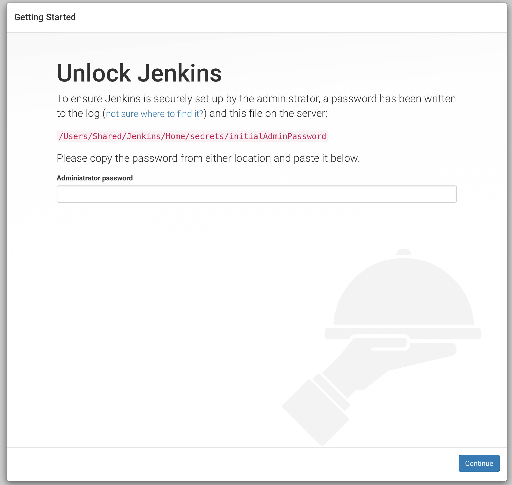
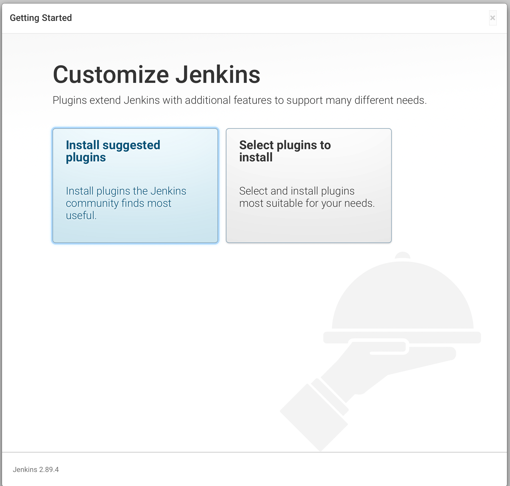

일단 윈도우 기반에서 2가지 방식으로 진행 할 것인데
주의할 것은 2번 방식은 톰캣을 별도 설치해서 진행하는 방식인데 계정이나 읽기권한 문제등으로 빌드가 실패하는 경우가 있다. 세팅문제는 차후 연구과제로 남겨놓겠다.
1번 방식은 http://printhelloworld.tistory.com/111 을 참고로 글쓰기
2번 방식은 http://tomining.tistory.com/127 http://ict-nroo.tistory.com/32 등을 참고로 글쓰기
맥에서 설치를 진행해 보겠다 맥에서는 homebrew를 이용하는게 설치가 더 쉽다. 홈브류 설치는 따로 설명하지는 않겠다.
이 링크 를 참고했다.참고로 기본 8080포트를 사용하기에 바꾸어야 편하게 사용할수 있다.
sudo defaults write /Library/Preferences/org.jenkins-ci.plist httpPort 9000

설치를 진행하면 위와 같은 화면이 나오게 된다. 잘 살펴보면/Users/Shared/Jenkins/Home/secrets/initialAdminPassword 에 써있는 값을 카피해서 입력하라는 뜻이다.

젠킨스의 플러그인을 어떤것을 설치할지를 묻는 화면인데 왼쪽은 추천설치, 오른쪽이 커스텀설치로 보면 된다.

사실 젠킨스는 일단 설치는 쉽다. 어려운점이 각 빌드환경에 맞게 세팅해야 하는것이 어려운것이다.